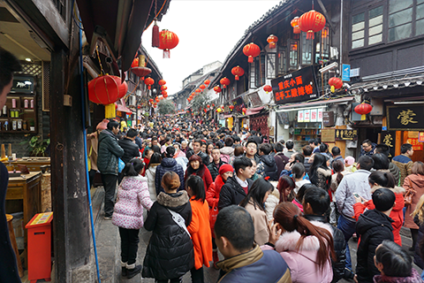
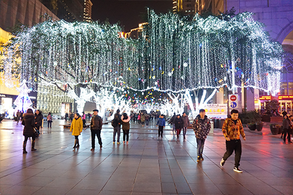
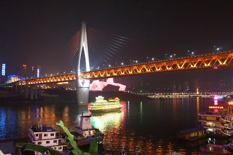

重庆
20160215Chongqing is a mountain city.
三个伙伴，走就走的旅行。
还记得刚抵达时的豌杂面（感觉都是大妈经营的这类店铺，但很好很好吃）。
还记得红汤火锅，还记得洪崖洞/长江索道，还记得人挤人的磁器口，还记得偷拍的美女，当然还记得晚上网吧的一小时。




Chongqing is a mountain city.
三个伙伴，走就走的旅行。
还记得刚抵达时的豌杂面（感觉都是大妈经营的这类店铺，但很好很好吃）。
还记得红汤火锅，还记得洪崖洞/长江索道，还记得人挤人的磁器口，还记得偷拍的美女，当然还记得晚上网吧的一小时。